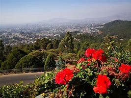
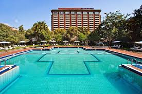

Places to visit while you are in Addis
1. Unity Park
Unity park officially inagurated and opened to the public on October 10 2019. Visitors can enjoy the following "Ten attractions" in the park

- Green Area
- Black-maned lion Zoo
- indegenous garden
- Menelik's Palace Complex
- Unity Archive
- The Throne Hall or Throne House
- Banquet Hall
- Unity Botanical garden
- Unity Zoo
- Ethiopian regional state Pavilion
2.Friendship park
Friendship park is the biggest urban park in AddisAbaba. The park is located right next to Unity park.
The park has an artificial lake, a square to gather and also water fountain lights at night time. It also contains a lots of flowers with diverse species of flora.
3. Entoto Natural Park
Entoto Natural park is a park of serenity and resounding joy. It is a unique place to discover the most breathtaking ancient mountain nature with streams flowing from clear springs and waterfalls.
Entoto park is fully equipped with indoor and outdoor facilities including sport centers,library, entertainment,restaurants and coffee shops,artificial lakes and fountains walkways,bike,scooter and cart roots.
4.Sheraton Addis Hotel
.jpeg)
Located at the heart of AddisAbaba, Sheraton Hotel sits on a hilltop overlooking the city, safely nested between the National palace and Prime minister's residence
5.Hilton Hotel
Hilton is another 5-star hotel that is definatley worth cheking out. An urban oasis near AddisAbaba's buslting center.Set with in lush gardens next to Ethiopia's Park.